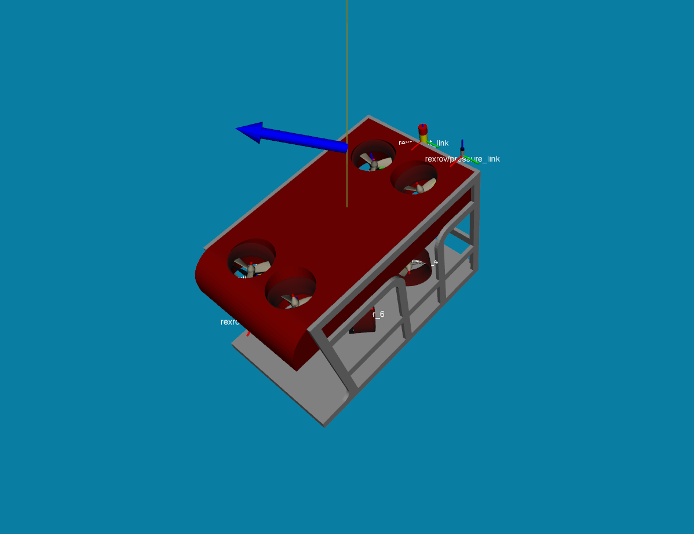

Disturbances
One of the steps to evaluate the vehicle's performance using a control strategy is to check how it would behave under different kinds of disturbances. One tool that can be used is an option in Gazebo through the GUI or using a ROS service to apply forces and torque to a link in the scenario. Additionally, it is possible to use the services provided by this package's underwater world Gazebo plugin to set a constant current velocity to the vehicles.
To make this type of tests easier, some scripts are available in the package uuv_control_utils to schedule disturbances to happen during the simulation, making it easier to reproduce a scenario where the disturbances have to be active only at a certain simulation time or have a limited duration.
The uuv_control_utils package provides scripts to apply the disturbances at specific times and also launch files that can be built in an use-case scenario.
The files mentioned below are available at the uuv_tutorial_disturbances.
Thruster failure¶
One interesting use-case to be tested is to see how the vehicle would behave in case one or more thrusters stops working. The thruster plugin provides a service call to set the thruster state to ON or OFF. Each thruster unit generates the service names automatically as follows
/<model_name>/thrusters/<thruster_id>/set_thruster_state /<model_name>/thrusters/<thruster_id>/get_thruster_state
The RexROV vehicle, for instance, provides the set thruster state service for thruster #2 as
/rexrov/thrusters/2/set_thruster_state.
To use the service call, a few options are presented below.
Setting thruster state through ROS service call¶
When you start the simulation with an thruster-actuated underwater vehicle, the thruster services will be made available by the thruster unit plugins. So, if you start, for example, the PID controller demo launch file as
roslaunch uuv_gazebo start_pid_demo.launch
you can set the state of one of the thrusters to OFF using the following
rosservice call /rexrov/thrusters/2/set_thruster_state "'on': false"
You can check the state of the thruster unit by calling
rosservice call /rexrov/thrusters/2/get_thruster_state
which should return
is_on: False
Using the uuv_control_utils ROS nodes¶
Even though the service call can be used in run time, if you want to schedule one or more thrusters to be turned off at a specific time and, optionally, set them to be turned on again after some time, you can use the ROS node in uuv_control_utils, set_thruster_state.py.
As an example, start the previous simulation again
roslaunch uuv_gazebo start_pid_demo.launch
and then start the node with its launch file as
roslaunch uuv_control_utils set_thruster_state.launch uuv_name:=rexrov starting_time:=10 duration:=20 is_on:=false thruster_id:=2
The argument uuv_name refers to the namespace of the robot model, starting_time is the simulation time stamp when the thruster state is going to be altered in seconds, duration refers to the duration in seconds of this new thruster state (set it to -1 if the thruster should be kept in this state indefinitely), is_on should be set to false to turn off the thruster and thruster_id is the index of the unit.
This launch file can also be included in other launch files to build a scenario with this thruster failure setup. The following example can called to demonstrate this as
roslaunch uuv_tutorial_disturbances tutorial_thruster_state.launch
You can monitor the thruster output during the simulation using rqt_plot or by reading the thruster unit output topic as
rostopic echo /rexrov/thrusters/2/thrust
Thruster and propeller efficiency loss¶
Another possibility is to set a efficiency factor to the thruster unit's thrust force output and/or to the propeller's dynamic state variable (usually the rotor's angular velocity). The services that allow these settings are, respectively
/<model_name>/thrusters/<thruster_id>/set_thrust_force_efficiency /<model_name>/thrusters/<thruster_id>/set_dynamic_state_efficiency
Setting thruster and propeller efficiency through ROS service call¶
Similar to the last example, you can start a simulation scenario with a vehicle, such as the demo
roslaunch uuv_gazebo start_pid_demo.launch
and then make a service call such as
rosservice call /rexrov/thrusters/2/set_thrust_force_efficiency "efficiency: 0.1"
Using the uuv_control_utils ROS nodes¶
For the setup of a thruster output efficiency factor during the simulation, you can use the launch file
roslaunch uuv_control_utils set_thruster_output_efficiency.launch uuv_name:=rexrov starting_time:=10 thruster_id:=2 duration:=20 efficiency:=0.3
where the argument efficiency must be a floating number from 0.0 to 1.0. A example is available and can be launched as follows
roslaunch uuv_tutorial_disturbances tutorial_thruster_efficiency.launch
Body wrench disturbances¶
It is also possible to set a simple step wrench disturbance to be applied on the center of mass of the vehicle during the simulation using Gazebo's apply body wrench services. To see more details on how to use Gazebo's ROS service, check this link.
In order to manage to use this disturbance in a launch file, you can also use the following
roslaunch uuv_control_utils apply_body_wrench.launch uuv_name:=rexrov starting_time:=0.0 duration:=10 force_x:=0 force_y:=0 force_z:=0 torque_x:=0 torque_y:=0 torque_z:=0
It is not necessary to set force and torque components explicitly if they are supposed to be set to 0.0, the launch file already does that per default. The duration can be set to -1 if the wrench must be applied for an indefinitely amount of time.
It is important to remember that the wrench will be applied on the center of mass of the vehicle's base link with respect to the inertial frame. You can run the following launch file to see an example of this disturbance
roslaunch uuv_tutorial_disturbances tutorial_body_wrench.launch
Current velocity¶
The current velocity is probably the most important type of disturbance in this list. Each model in the simulation running an instance of the underwater object plugin <https://github.com/uuvsimulator/uuv_simulator/blob/master/uuv_gazebo_plugins/uuv_gazebo_plugins/src/UnderwaterObjectPlugin.cc>_ with defined linear and quadratic damping coefficients will be affected by the current velocity that is published by the underwater world plugin through the topic /hydrodynamics/current_velocity. The underwater object plugin can also subscribe to its own private current velocity topic /<model_name/current_velocity, but this is subject for another tutorial.
The underwater world plugin can generate current velocity topics using three separate Gauss-Markov processes as described in Fossen, 2011 (for the current velocity magnitude, horizontal angle and vertical angle) that can be also set in the world SDF file.
Setting the current velocity model using ROS service calls¶
There are different possibilities to set the current velocity through service call. The simplest option is to simply set constant current velocity vector as in the example
rosservice call /hydrodynamics/set_current_velocity "velocity: 1.0 horizontal_angle: -0.8 vertical_angle: 0.2"
The angles here are expressed in radians. These parameters can also be individually set using the following calls
rosservice call /hydrodynamics/set_current_horz_angle "angle: 0.0" rosservice call /hydrodynamics/set_current_vert_angle "angle: 0.0"
and you can monitor the current velocity topic /hydrodynamics/current_velocity on the terminal with rostopic echo or in rqt.
It is important to note that the current velocity is calculated in Gazebo's ENU reference frame since it does not recognize the SNAME convention. If you visualize the simulation output in RViz, you can subscribe to the topic /<model_name>/current_velocity_marker to see an arrow indicating the direction of the current velocity as shown in the image below. The marker disappears if the current velocity is set to zero.

As mentioned, the current velocity magnitude, horizontal and vertical angles are modelled as Gauss-Markov processes to allow a small variation around a mean value. These models can be set using the service calls below
rosservice call /hydrodynamics/set_current_velocity_model "{mean: 0.0, min: 0.0, max: 0.0, noise: 0.0, mu: 0.0}" rosservice call /hydrodynamics/set_current_horz_angle_model "{mean: 0.0, min: 0.0, max: 0.0, noise: 0.0, mu: 0.0}" rosservice call /hydrodynamics/set_current_vert_angle_model "{mean: 0.0, min: 0.0, max: 0.0, noise: 0.0, mu: 0.0}"
Using the uuv_control_utils ROS node¶
In order set a current velocity to the simulation without needing manual service calls or changes in the world's SDF file, a ROS node is available in the uuv_control_utils package, but currently only for constant current velocity models. You can call it using the following launch file
roslaunch uuv_control_utils set_timed_current_perturbation.launch starting_time:=0.0 end_time:=10.0 current_vel:=1.0 horizontal_angle:=10.0 vertical_angle:=30
This ROS node takes the horizontal and vertical angles in degrees and the current can also be set to end in a fixed time by using the argument end_time. You can run the following tutorial example to see how it can be used
roslaunch uuv_tutorial_disturbances tutorial_timed_current.launch
Disturbance manager¶
All of these past examples are very helpful to set individual disturbances, but in case one scenario needs several (and sometimes different) disturbance models to be activated in the same simulation scenario, you can use the disturbance manager node <https://github.com/uuvsimulator/uuv_simulator/blob/master/uuv_control/uuv_control_utils/launch/start_disturbance_manager.launch>_. With this tool, you can make an YAML files with the full configuration of the disturbances that will be activated during the simulation such as in the example below
disturbances:
-
type: current
starting_time: 0
velocity: 1.2
horizontal_angle: 0
vertical_angle: 0
duration: 10
-
type: thruster_state
starting_time: 10
duration: 10
thruster_id: 2
is_on: 0
-
type: propeller_efficiency
starting_time: 20
duration: 10
thruster_id: 4
efficiency: 0.2
-
type: thrust_efficiency
starting_time: 30
duration: 10
thruster_id: 4
efficiency: 0.1
-
type: wrench
starting_time: 40
duration: 10
force:
- 1500
- 0
- -1500
torque:
- 1000
- 0
- 0
and pass the path of the file to the disturbance manager node as in the following example
<include file="$(find uuv_control_utils)/launch/start_disturbance_manager.launch"> <arg name="uuv_name" value="rexrov"/> <arg name="use_file" value="true"/> <arg name="disturbance_file" value="$(find uuv_tutorial_disturbances)/config/disturbances.yaml"/> </include>
The functionalities mentioned previously, such as disturbance duration, remain the same. Run the following example to see how it works ::
roslaunch uuv_tutorial_disturbances tutorial_disturbance_manager.launch